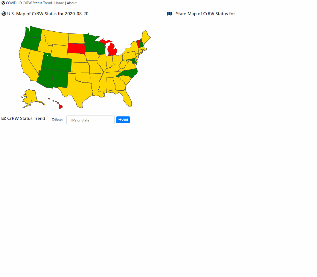

CrRW: Cr7d100k and RW_Cr7d100k
CrRW is a novel method to measure the trends in COVID-19 or other infectious diseases, which includes two indicators:
1. Cr7d100k: 7-day smoothed average daily case rate per 100k capita;
2. RW_Cr7d100k: the ratio of this week’s Cr7d100k comparing to the week before.
The data for calculating CrRW are from USAFacts and COVIDTracking.
By using these two indicators in combination, we can depict the current status of the epidemic as well as recent trends with following thresholds:
1. The GREEN status: There are two cases. First, if Cr7d100k <= 10 for the past seven days, it would be safe. Second, if Cr7d100k < 15 and RW_Cr7d100k < 1 for the past seven days, it would be relative safe;
2. The RED status: There are two cases. First, if Cr7d100k > 30 for the past seven days, the pandemic is extremely serious. Second, if Cr7d100k > 10 and RW_Cr7d100k > 1 and for the past seven days, the current pandemic situation is bad or the trend is bad;
3. The ORANGE status: Everything else is orange status as we cannot say much – it can go either way.
Pandemic Vulnerability Index
The Pandemic Vulnerability Index (PVI) is an indicator which integrates baseline data on relevant community vulnerabilities with dynamic data on local infection rates and interventions PMID: 32817964. The data of PVI model are from CDC COVID Data Tracker.
How to use this website?
Click on the states and counties to see the CrRW status trend.
